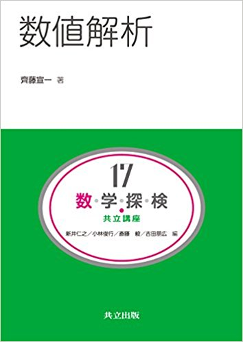
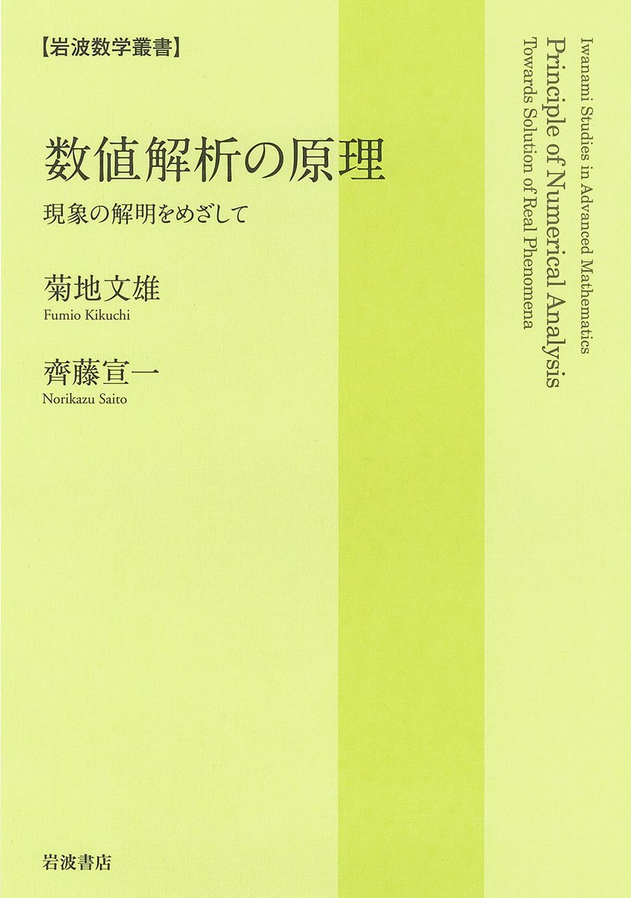
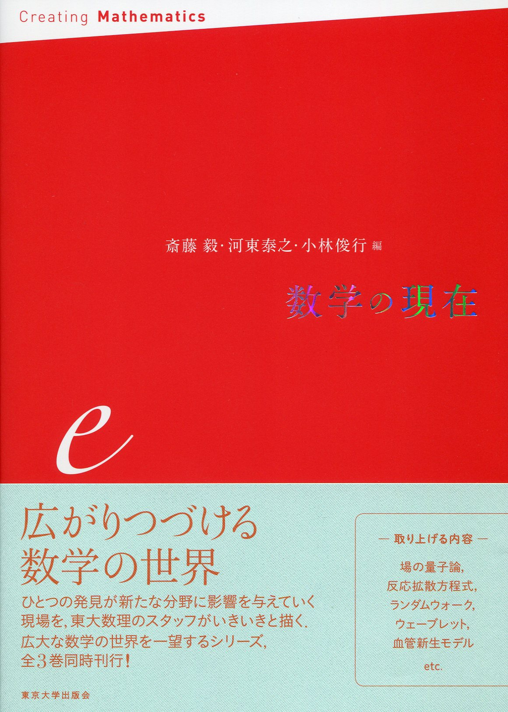
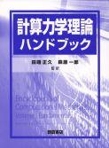
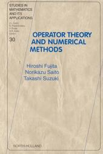

Norikazu Saito
単行本
2023
2019
- 藤田宏，齊藤宣一：はじめての応用解析
- 岩波書店，2019年9月，2,800円（税抜き価格）
- ISBN: 9784000058407
2017

- 齊藤宣一：数値解析
（共立講座数学探求）
- 共立出版，2017年3月，2,500円（税抜き価格）
- ISBN-10: 4320111907, ISBN-13: 978-4320111905
- サポートページには，本書に載っている計算例を作成したプログラム（Scilab）とその使い方が公開されています．
- 正誤表があります
2016

2016

- 斎藤毅，河東泰之，小林俊行（編）：数学の現在 e，第8講 数値解析--偏微分方程式の解を“見る”（齊藤宣一）
- 東京大学出版会，2016年5月，3,000円（税抜き価格）
- ISBN: 978-4-13-065313-8
2012
- 齊藤宣一：数値解析入門（大学数学の入門9）
- 東京大学出版会，2012年10月23日，3,000円（税抜き価格）
- ISBN-10: 413062959X，ISBN-13: 978-4130629591
- 補足説明等をまとめた個人的なメモがあります→
「数値解析入門」補講 (PDFファイル 400 KB)
2010

- E. スタイン，R. ドウボースト，T. ヒューズ編（田端正久，萩原一郎 監訳）
- 計算力学理論ハンドブック
- 朝倉書店，2010年06月15日，ISBN978-4-254-23120-5，33,600円
- 担当：第24章 放物型問題に対するアダプティブ法 (Adaptive Computational Methods for Parabolic Problems; by K. Eriksson, C. Johnson and A. Logg)
2001

- Hiroshi Fujita, Norikazu Saito, and Takashi Suzuki:
- Operator Theory and Numerical Methods
- (Studies in Mathematics and its Applications 30)
- Elsevier(North-Holland), 2001, 308 pages,
ISBN: 0-444-50474-5
Copyright (C) 2015 Norikazu Saito